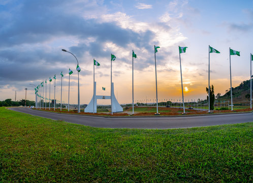

The North-Central is the one of the Six geopolitical zones of Nigeria representing the majority of the country's population. The North Central comprises of six states and the Country's Capital. A brief detail about a state in the North-Central. About FCT Federal Capital Territory
Benue state
Kogi state
Kwara state
Nasarawa state
Niger state
Plateau state
North East
The North-East is the one of the six geopolitical Zones in Nigeria reprensenting both a geographic and political region of the country's northeast. it comprises Six states. Geographically, the North East is the largest geopolitical zone in the nation, covering nearly one-third of Nigeria's total area. About a state in the North East. Yobe state govt.
Yobe State
Adamawa state
Bauchi state
Gombe state
Taraba state
Yobe state
North West
The North West is the one of the six geopolitical zones in Nigeria representing both a geographic and political region of the country's northwest. It comprises seven states. Geographically, the zones is almost entirely within the tropical West. Culturally the majority of zone falls within the indigenous cultural homeland of the Hausa people. Kano state govt.
The South-West is the one of the six geopolitical zones of Nigeria representing both a geographic and political region of the country's southwest. It comprises six states. it makes up part of Yorubaland in Nigeria, with Kwara and Kogi completing it.About Lagos state
p>The South East is the one of the six geopolitical zones of Nigeria representing both a geographic and political region of the country's inland southeast. It comprises five State. The zone is bounded by the River Niger on the west, the riverine Niger Delta on the south, the flat North Central to the north, and the Cross River on the east. About Abia State.Abia state Indigene
Abia state
Abambra state
Ebonyi state
Enugu state
Imo state
South South
The South-South is one of the six geopolitical zones of Nigeria representing both a geographic and political region of the country's eastern coast. It comprises six states. About Akwa Ibom Govt.
Akwa Ibom Governor
Akwa ibom
Bayelsa state
Cross rivers
Delta state
Rivers state
Europe
Spain election drama: Sanchez wins backing for new term after Catalan deal
The socialist Spanish politician has won parliament support to be PM again, after striking a controversial agreement with Catalan separatists.
America
Joe Biden says he would never have replaced Hillary Clinton in 2016 presidential race if asked
He so far hasn't ruled out a 2020 run
Asia
Exclusive: Chinese jet fired flares close to submarine-hunting helicopter in South China Sea, Canadian Navy says
Brad Lendon
By Brad Lendon, CNN